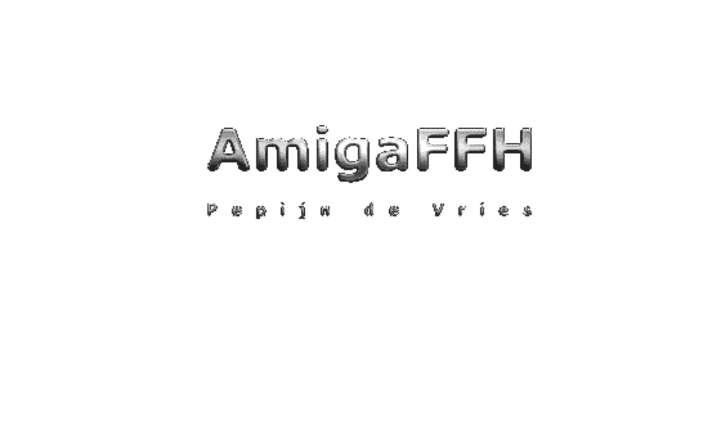

Convert AmigaFFH objects into grDevices raster images
Source:R/basic.r, R/bitmapfont.r, R/hardwareSprites.r, and 2 more
as.raster.RdConvert AmigaFFH objects that contain bitmap images into grDevices raster images.
Usage
# S3 method for class 'AmigaBasicShape'
as.raster(x, selected = c("bitmap", "shadow", "collision"), ...)
# S3 method for class 'AmigaBitmapFont'
as.raster(x, text, style, palette, ...)
# S3 method for class 'AmigaBitmapFontSet'
as.raster(x, text, style, palette, ...)
# S3 method for class 'hardwareSprite'
as.raster(x, background = "#AAAAAA", ...)
# S3 method for class 'IFFChunk'
as.raster(x, ...)
# S3 method for class 'AmigaIcon'
as.raster(x, selected = FALSE, ...)Arguments
- x
Object that needs to be converted into a
grDevicesraster. It can be anIFFChunk()containing an interleaved bitmap image (ILBM) or animation (ANIM), ahardwareSprite(), anAmigaBitmapFont()object or anAmigaBitmapFontSet()object.- selected
When
xis an object of classAmigaIcon(),selectedcan be used to select a specific state. When set toTRUE, the raster of theAmigaIcon()will be based on the `selected' state of the icon. Otherwise it will be based on the deselected state (default).When
xis anAmigaBasicShape()class object,selectedcan be used to select a specific layer of the shape to plot, which can be one of"bitmap"(default),"shadow"or"collision".- ...
Currently ignored.
- text
Text (a
characterstring) to be formated withx(whenxis anAmigaBitmapFont()or anAmigaBitmapFontSet().- style
Argument is only valid when
xis anAmigaBitmapFont()or anAmigaBitmapFontSet(). No styling is applied when missing orNULL. One or more of the following styles can be used 'bold', 'italicor 'underlined'.- palette
Argument is only valid when
xis anAmigaBitmapFont()or anAmigaBitmapFontSet(). Should be avectorof two colours. The first is element is used as background colour, the second as foreground. When missing, transparent white and black are used.- background
Use the argument
backgroundto specify a background colour in casexis ahardwareSprite().
Value
Returns a grDevices raster image (grDevices::as.raster())
based on x. If x is an animation (IFFChunk() of type ANIM),
a list of raster objects is returned.
Details
Images on the Amiga were stored as bitmap images with indexed colour
palettes. This was mainly due to hardware and memory limitations.
Bitmap images could also be embedded in several file types. This method
can be used to convert AmigaFFH objects read from such files into
grDevices raster images (grDevices::as.raster()).
See also
Other raster.operations:
AmigaBitmapFont,
bitmapToRaster(),
dither(),
index.colours(),
rasterToAmigaBasicShape(),
rasterToAmigaBitmapFont(),
rasterToBitmap(),
rasterToHWSprite(),
rasterToIFF()
Other raster.operations:
AmigaBitmapFont,
bitmapToRaster(),
dither(),
index.colours(),
rasterToAmigaBasicShape(),
rasterToAmigaBitmapFont(),
rasterToBitmap(),
rasterToHWSprite(),
rasterToIFF()
Other iff.operations:
IFFChunk-class,
WaveToIFF(),
getIFFChunk(),
interpretIFFChunk(),
rasterToIFF(),
rawToIFFChunk(),
read.iff(),
write.iff()
Other raster.operations:
AmigaBitmapFont,
bitmapToRaster(),
dither(),
index.colours(),
rasterToAmigaBasicShape(),
rasterToAmigaBitmapFont(),
rasterToBitmap(),
rasterToHWSprite(),
rasterToIFF()
Other raster.operations:
AmigaBitmapFont,
bitmapToRaster(),
dither(),
index.colours(),
rasterToAmigaBasicShape(),
rasterToAmigaBitmapFont(),
rasterToBitmap(),
rasterToHWSprite(),
rasterToIFF()
Examples
## load an IFF file
example.iff <- read.iff(system.file("ilbm8lores.iff", package = "AmigaFFH"))
## The file contains an interleaved bitmap image that can be
## converted into a raster:
example.raster <- as.raster(example.iff)
## the raster can be plotted:
plot(example.raster)

## note that the IFFChunk can also be plotted directly:
plot(example.iff)
## Hardware sprites can also be converted into raster images.
## Let's generate a 16x16 sprite with a random bitmap:
spr <- new("hardwareSprite",
VStop = 16,
bitmap = as.raw(sample.int(255, 64, replace = TRUE)))
## now convert it into a raster image.
## as the background colour is not specified for hardware
## sprite, we can optionally provide it here.
spr.raster <- as.raster(spr, background = "green")
## AmigaBasicShape objects can also be converted into rasters:
ball <- read.AmigaBasicShape(system.file("ball.shp", package = "AmigaFFH"))
ball.rst <- as.raster(ball)